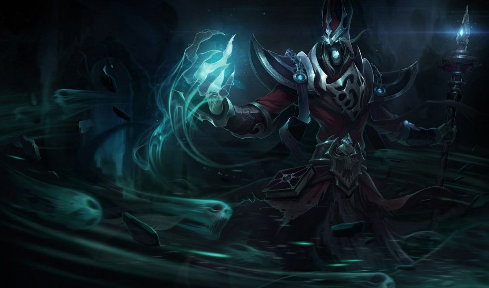

Karthus é um presságio do esquecimento, um espírito imortal cujas canções assombradas são um prelúdio para o horror de sua aparição de pesadelo. Os vivos temem a eternidade da morte, mas Karthus vê apenas beleza e pureza em seu abraço, uma união perfeita de vida e pós-vida. Ele merge das Ilhas das Sombras para levar sua canção fúnebre aos mortais, como um pastor de almas perdidas que busca libertar o mundo da dor da carne.

Ouça o tema oficial do Karthus
Desde sua juventude nas favelas de uma grande cidade, Karthus era fascinado pela morte. Enquanto outros fugiam de necrotérios e cemitérios, ele caminhava por eles por escolha própria, observando o momento exato em que a centelha da vida deixava os olhos dos moribundos. Essa obsessão mórbida o levou a fazer uma jornada sem volta para as névoas das Ilhas das Sombras, onde ele voluntariamente se entregou ao esquecimento para renascer como o Lich que é hoje.
As habilidades do Lich no Campo de Batalha
No League of Legends, o Karthus é um mago de controle focado em causar dano massivo em área e pressionar o mapa inteiro de forma global. Ele é um dos poucos campeões cuja mecânica principal se beneficia de um posicionamento agressivo na hora da morte. Graças à sua passiva, ele pode continuar conjurando feitiços sem custo de mana por alguns segundos mesmo após ser abatido pelos adversários, transformando lutas em equipes em cenários caóticos.
- Devastação (Q): Cria uma explosão retardada em um local, causando dano dobrado se atingir apenas um único alvo.
- Barreira da Dor (W): Cria uma parede mística que reduz a velocidade de movimento e a resistência mágica dos inimigos que a atravessarem.
- Perdição (E): Passivamente recupera mana ai abater unidades. Quando ativada, cria uma aura ao redor de Karthus que consome mana mas causa dano contínuo.
- Requiém (R): A sua habilidade ultimate mais temida, Karthus canaliza por 3 segundos para causa dano mágico a todos os campeõs inimigos no mapa, não importa onde estejam.
Atributos Técnicos e Estatísticas de Jogo
Para extrair o potencial máximo do poder do Karthus, os jogadores costumam focar em itens que concedem muito Poder de Habilidade (AP) e Penetração Mágica. A tabela abaixo lista os itens essenciais que potencializam o seu infame Requiém, transformando sua habilidade definitiva em uma verdadeira sentença de morte para alvos com pouca vida em qualquer lugar do mapa de Summoner's Rift.
| Nome do Item | Atributo Principal | Função na Build |
|---|---|---|
| Malevolência | Poder de Habilidade e Aceleração da Ultimate | Reduz o tempo de recarga do Requiém e queima o chão sob os inimigos |
| Capuz da Morte de Rabadon | Poder de Habilidade Massivo (+35% AP total) | Aumenta drasticamente o dano de todas as suas habilidades. |
| Cajado do Vazio | 40% de Penetração Mágica | Garante que o dano passe direto pela defesa mágica dos tanques |
Para mais detalhes sobre as estatísticas atuais de taxas de vitória e builds recomendadas, você pode conferir a página do Karthus no OP.GG.